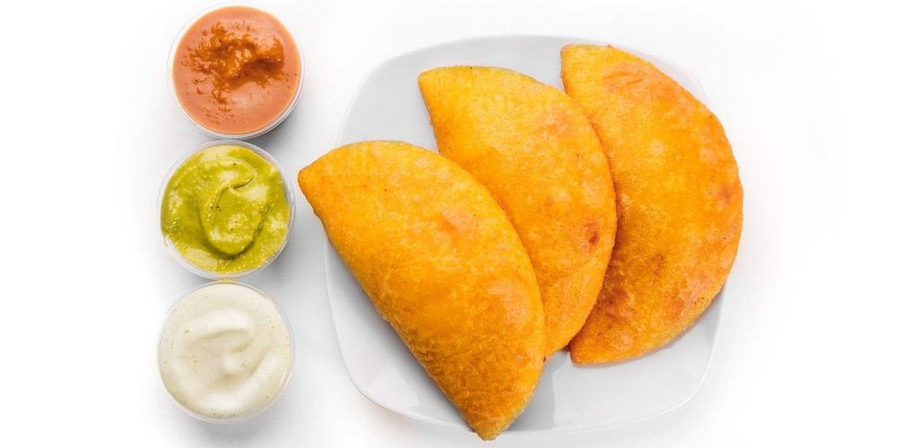

Empanadita de carne mechada

La empanada venezolana, al igual que muchas comidas populares en América Latina, tiene sus raíces en la influencia española. El nombre "empanada" proviene del verbo "empanar", que significa envolver algo en pan. Sin embargo, la empanada en Venezuela ha evolucionado, adoptando ingredientes y sabores locales que le han dado una identidad culinaria propia. Aunque el concepto de envolver comida es común en muchas culturas (como los samosas indios y los dumplings chinos), la versión venezolana se distingue por la variedad de sus rellenos y la forma en que se cocina, ya sea frita, horneada o asada. En el ámbito callejero, la empanada se ha vuelto un símbolo de la comida rápida en Venezuela, encontrándose comúnmente en puestos de comida a lo largo del país, con rellenos que van desde la carne mechada hasta opciones más creativas.